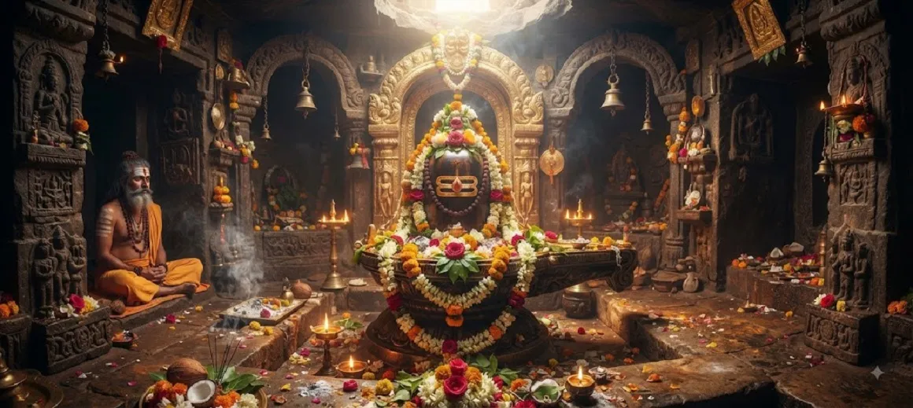

पवित्र शिवलिंग का माहात्म्य
कोटिरुद्र संहिता का दूसरा अध्याय ज्योतिर्लिंगों की महानता से शिव पूजा के केंद्र में पूजनीय प्रतीक शिवलिंग की पवित्र महानता की ओर मुड़ता है।
लिंग भक्त को प्रार्थना, अभिषेक, मंत्र, ध्यान, प्रसाद, दर्शन और स्मरण के लिए एक पवित्र ध्यान देता है। इन प्रथाओं के माध्यम से, बाहरी पूजा आंतरिक भक्ति और जागरूकता पैदा करने का एक साधन बन सकती है।
अध्याय भक्त को पवित्र प्रतीक को श्रद्धा के साथ समझने और पवित्रता, विनम्रता, करुणा, आत्म-संयम और शिव के प्रति समर्पण के माध्यम से दैनिक जीवन में इसकी शिक्षा को अपनाने के लिए प्रोत्साहित करता है।
अध्याय 2 की मुख्य बातें
शिव का पवित्र प्रतीक
शिवलिंग भगवान शिव की पूजा और स्मरण का एक प्रतिष्ठित केंद्र है।
दिव्य उपस्थिति
लिंग सर्वोच्च दिव्य उपस्थिति के रूप में शिव की ओर चिंतन को निर्देशित करता है।
अभिषेक और पूजा
पवित्र स्नान, प्रसाद, मंत्र और प्रार्थना शिव के प्रति भक्ति व्यक्त करते हैं।
भक्ति और पवित्रता
ईमानदारी से लिंग पूजा हृदय और इरादे की शुद्धता को प्रोत्साहित करती है।
महादेव को समर्पण करो
पूजा मन, कर्म और आंतरिक जीवन की शिव को भेंट बन जाती है।
आकार से निराकार तक
पवित्र प्रतीक चिंतन को सीमित बाहरी रूपों से परे ले जा सकता है।
इस अध्याय में मुख्य विषय
शिवलिंग का अर्थ और पवित्र स्वरूप
शिवलिंग भगवान शिव की पूजा में सबसे प्रतिष्ठित प्रतीकों में से एक है। यह एक पवित्र फोकस प्रदान करता है जिसके माध्यम से भक्त श्रद्धा, प्रार्थना और स्मरण के साथ महादेव के पास जाते हैं।
इसकी पवित्र उपस्थिति मन को शांत और ध्यानपूर्ण बनने के लिए आमंत्रित करती है। शिव को एक सामान्य भौतिक रूप तक सीमित करने के बजाय, लिंग दिव्य के चिंतन को पारलौकिक, सूक्ष्म और सृष्टि के भीतर मौजूद होने का समर्थन करता है।
लिंग का आध्यात्मिक प्रतीकवाद
पवित्र लिंग को एक ऐसे चिन्ह के रूप में माना जा सकता है जो स्वयं से परे इंगित करता है। यह ध्यान को दृश्य रूप से उस रूप के माध्यम से प्रदर्शित दिव्य वास्तविकता की ओर निर्देशित करता है।
एक भक्त के लिए, यह प्रतीकवाद शिव के रहस्य के समक्ष विनम्रता और यह पहचानने की इच्छा को प्रोत्साहित करता है कि ईश्वर को सामान्य अवधारणाओं तक सीमित नहीं किया जा सकता है।
पूजा, अभिषेक, और प्रसाद
शिवलिंग पूजा में अभिषेक, जल और अन्य पवित्र प्रसाद, फूल, बिल्व पत्र, धूप, दीपक, मंत्र, प्रार्थना और ध्यान शामिल हो सकते हैं। ये प्रथाएँ श्रद्धा और प्रेमपूर्ण भक्ति व्यक्त करती हैं।
बाहरी अनुष्ठान ध्यान और ईमानदारी से करने पर आध्यात्मिक रूप से सार्थक हो जाता है। उद्देश्य केवल कार्य ही नहीं है, बल्कि इसके माध्यम से किया जाने वाला भक्तिपूर्ण दृष्टिकोण भी है।
शिव का स्मरण एवं ध्यान
शिवलिंग स्मरण के लिए एक स्थिर फोकस प्रदान करता है। मन को बार-बार शिव की ओर वापस लाने से धीरे-धीरे एकाग्रता और भक्ति संबंधी जागरूकता मजबूत हो सकती है।
एक भक्त दर्शन, मंत्र, मौन प्रार्थना और ध्यान को जोड़ सकता है। इस तरह की प्रथाएं पूजा के एक क्षण को शिव के साथ निरंतर संबंध में बदलने में मदद करती हैं।
भक्ति, पवित्रता और समर्पण
लिंग पूजा की महानता न केवल अनुष्ठान में बल्कि भक्त के भीतर प्रोत्साहित होने वाले गुणों में भी परिलक्षित होती है। आस्था, विनम्रता, पवित्रता, करुणा, धैर्य और समर्पण ईमानदारी से अभ्यास के महत्वपूर्ण फल बन जाते हैं।
जब पूजा आचरण में बदलाव लाती है, तो पवित्र अभ्यास आध्यात्मिक परिवर्तन का हिस्सा बन जाता है। भक्त शिव के प्रति श्रद्धा को रिश्तों, जिम्मेदारियों और सामान्य कार्यों में लाना सीखता है।
लिंग पूजा का आन्तरिक अर्थ
पवित्र प्रतीक आंतरिक जीवन का दर्पण बन सकता है। जैसे भक्त जल, फूल, प्रार्थना और मंत्र अर्पित करता है, उससे भी गहरा प्रसाद मन ही होता है।
यह आंतरिक अभिविन्यास भक्त को अहंकार, व्याकुलता और स्वार्थी लगाव को छोड़ने के लिए प्रोत्साहित करता है, उन्हें जागरूकता, भक्ति और ईश्वर के प्रति समर्पण के साथ प्रतिस्थापित करता है।
दैनिक जीवन में शिक्षण को जीना
पवित्र शिवलिंग की महानता को नियमित स्मरण, सत्य आचरण, करुणा, आत्म-संयम और सच्ची प्रार्थना के माध्यम से दैनिक जीवन में अपनाया जा सकता है।
एक साधारण दैनिक अभ्यास में शांत स्मरण या मंत्र के कुछ क्षण शामिल हो सकते हैं। इसका उद्देश्य पूजा की भावना को मंदिर के बाहर भी जारी रखना है।
अध्याय 2 की मुख्य शिक्षाएँ
ईमानदारी से पूजा करें
प्रत्येक भेंट वास्तविक श्रद्धा और भक्ति से उत्पन्न हो।
अभिषेक को सार्थक बनाएं
अनुष्ठान मन को पवित्रता, समर्पण और स्मरण की याद दिलाए।
इरादा शुद्ध करें
केवल वस्तुएँ ही नहीं, बल्कि अभिमान, क्रोध और स्वार्थी लगाव भी प्रस्तुत करें।
शिव को याद में रखो
औपचारिक पूजा से स्मरण को सामान्य क्षणों में ले जाएं।
प्रतीक से परे देखें
पवित्र लिंग को सीमित स्वरूप से परे ईश्वर की ओर चिंतन करने दें।
आराधना से जीवन बदलें
सत्यता, करुणा, धैर्य और आत्म-संयम के माध्यम से भक्ति व्यक्त करें।
आध्यात्मिक चिंतन
पवित्र शिवलिंग केवल अनुष्ठानिक ध्यान की वस्तु नहीं है। यह एक फोकस बन सकता है जिसके माध्यम से भक्त मन को शांत करता है, महादेव को याद करता है, और आंतरिक जीवन को भगवान को अर्पित करता है। पूजा का बाहरी कार्य तब सबसे सार्थक हो जाता है जब वह भीतर विनम्रता, भक्ति, पवित्रता और जागरूकता जगाता है।
अध्याय 2 का संदेश जीना
दिन की शुरुआत या समाप्ति शिव स्मरण के कुछ शांत क्षणों के साथ करें। एक सरल मंत्र या सच्ची प्रार्थना मन को पूजा की भावना से जोड़े रखने में मदद कर सकती है।
पूजा करते समय हर भेंट के पीछे की मंशा पर ध्यान दें। जल, फूल, मंत्र और प्रार्थना को महज दिनचर्या के बजाय कृतज्ञता और समर्पण की अभिव्यक्ति बनने दें।
पूजा से जाग्रत गुणों को सामान्य रिश्तों और जिम्मेदारियों में अपनाएं। सत्यता, धैर्य, करुणा, संयम और विनम्रता जीवन में भक्ति को प्रकट करने के तरीके हैं।
प्रमुख आध्यात्मिक अवधारणाएँ
भगवान शिव का पवित्र प्रतीक और श्रद्धापूर्ण पूजा का केंद्र।
शुभ भगवान, सर्वोच्च दिव्य वास्तविकता के रूप में पूजे जाते हैं।
शिवलिंग पर किया जाने वाला भक्तिपूर्ण स्नान या पवित्र प्रसाद।
शिव पूजा में पारंपरिक रूप से चढ़ाया जाने वाला एक पवित्र पत्ता।
पूजा के माध्यम से देवता का पवित्र दर्शन या उसकी उपस्थिति प्राप्त करना।
ईश्वर के प्रति भक्ति, प्रेम, स्मरण और समर्पण।
अध्याय सारांश
कोटिरुद्र संहिता अध्याय 2 शिवलिंग की पवित्र महिमा और भगवान शिव की पूजा और स्मरण में इसके केंद्रीय स्थान को प्रस्तुत करता है। यह लिंग के अर्थ और प्रतीकवाद, अभिषेक और प्रसाद की भक्तिपूर्ण भूमिका, स्मरण और ध्यान, और ईमानदारी से पूजा द्वारा प्रोत्साहित आंतरिक परिवर्तन की पड़ताल करता है। अध्याय इस बात पर जोर देता है कि पवित्र अभ्यास का मूल्य न केवल अनुष्ठान में बल्कि पवित्रता, विनम्रता, करुणा, आत्म-संयम और समर्पण में भी व्यक्त होता है। यह पाठक को अध्याय 3, अत्रि और अनसूया की तपस्या के लिए तैयार करता है।
अक्सर पूछे जाने वाले प्रश्न
1. कोटिरुद्र संहिता अध्याय 2 का मुख्य विषय क्या है?
अध्याय 2 में शिवलिंग की पवित्र महिमा और भगवान शिव की पूजा, स्मरण और चिंतन में इसके केंद्रीय स्थान के बारे में बताया गया है।
2. शिवलिंग क्या दर्शाता है?
शिवलिंग एक पूजनीय पवित्र प्रतीक है जिसके माध्यम से भक्त भगवान शिव, उनकी उपस्थिति और सीमित रूपों से परे दिव्य वास्तविकता पर विचार करते हैं।
3.शिवलिंग की पूजा क्यों की जाती है?
इसे प्रार्थना, अभिषेक, मंत्र, ध्यान, प्रसाद, भक्ति और शिव के स्मरण के लिए एक पवित्र केंद्र के रूप में पूजा जाता है।
4. शिवलिंग पूजा का आध्यात्मिक महत्व क्या है?
सच्ची पूजा से भक्ति, विनम्रता, एकाग्रता, इरादे की पवित्रता, समर्पण और ईश्वर के प्रति जागरूकता पैदा हो सकती है।
5. शिव पूजा में अभिषेक क्या है?
अभिषेक श्रद्धा और पूजा की अभिव्यक्ति के रूप में शिवलिंग को स्नान कराने या पवित्र पदार्थ चढ़ाने का एक धार्मिक अनुष्ठान है।
6. अध्याय 2 अध्याय 3 की ओर कैसे ले जाता है?
अध्याय 2 पवित्र शिवलिंग की महानता की पड़ताल करता है, जबकि अध्याय 3 अत्रि और अनसूया की तपस्या के साथ जारी है।
"जब पवित्र शिवलिंग की पूजा सच्ची याद बन जाती है, तो बाहरी भेंट हृदय की आंतरिक भेंट को जागृत कर सकती है।"
कोटिरुद्र संहिता के माध्यम से जारी रखें
अध्याय 2 पवित्र शिवलिंग की महानता की पड़ताल करता है। अध्याय 3, अत्रि और अनसूया की तपस्या को जारी रखें।